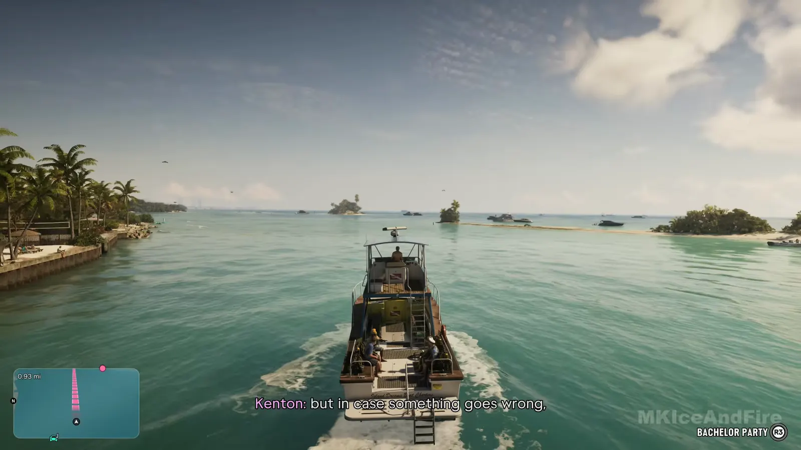
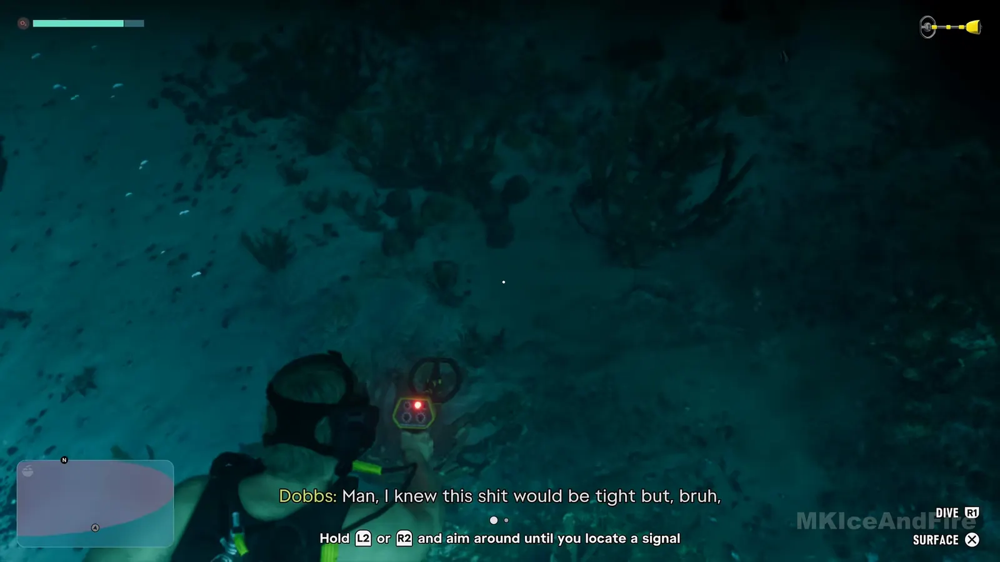
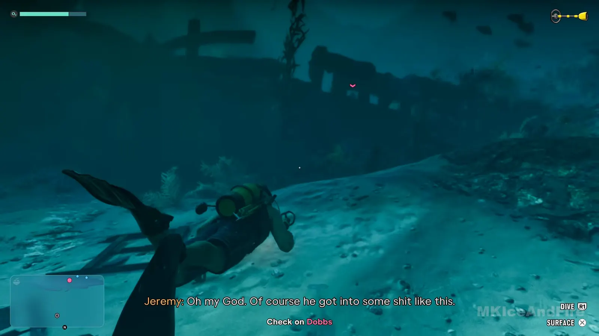

Сокровища Кентона в GTA 6: дайвинг и металлоискатель
Опубликовано:

- Поиск кладов открывается после миссии Island Dreams в главе 1 — Кентон Рис даёт акваланг и металлоискатель.
- Наборов сокровищ 7; для 100% нужно 5, но все 33 подводные находки закрываются только полным комплектом.
- Места погружений — фиолетовые сундуки на карте.
- Финал цепочки Кентона — трофей This Was No Boat Accident.
Как открыть
В главе 1 Джейсон проходит у Кентона миссию Island Dreams: ведёт мальчишник к затонувшему кораблю и впервые ищет клад металлоискателем. После неё Кентон пишет, просит вернуться в магазин на Ки-Ленто и отдаёт снаряжение — акваланг и металлоискатель. Его лодку у магазина можно брать для погружений.

Как пользоваться металлоискателем
- Под водой откройте колесо оружия — L1 (LB) — и выберите металлоискатель.
- Зажмите курок прицела и ведите прибор над дном: стрелка показывает направление, а писк учащается по мере приближения.
- Когда сигнал станет непрерывным и зелёным, появится подсказка — выкопайте сокровище.
- Привезите находки Кентону — он их купит. Для коллекции продавать не обязательно, достаточно найти.

Затонувшие корабли
| Место погружения | Сокровищ | Примечание |
|---|---|---|
| Nuestra Señora del Ocio | — | корабль из миссии Island Dreams |
| Nuestra Señora Lujuriosa | 6 | |
| Nuestra Señora de la Ética Laxa | 5 | например, золотой кулон и золотая чаша |
| Nuestra Señora de la Noche | 7 | большинство — у разломанного корпуса |
Остальные места Кентон отмечает по ходу цепочки Maritime Disputes. Сколько кладов уже найдено на каждом месте, видно в карточке на карте. Прогресс по наборам: Прогресс → Персонажи → Кентон Рис.

Испытания под водой
| Испытание | Что сделать |
|---|---|
| Underwater Discoveries | найти 25 необычных мест на дне |
| Underwater Treasures | найти 85 подводных сокровищ |
| Black Hole Wrecks | найти все 11 затонувших обломков «чёрных дыр» |
Все три — из раздела «Исследование» в списке 80 испытаний.
Частые вопросы
Как открыть сокровища Кентона в GTA 6?
Пройдите миссию Island Dreams в главе 1 и вернитесь в магазин Кентона на Ки-Ленто — он даст акваланг и металлоискатель.
Сколько наборов сокровищ?
7; для 100% нужно 5.
Обязательно ли продавать сокровища Кентону?
Нет, для коллекции достаточно найти. Продажа — это деньги.
Какой трофей за Кентона?
This Was No Boat Accident — за финальную миссию его цепочки.
Источники: PowerPyx, Trophy Guide и «All Challenges», 18.11.2026; GMTreks, «Treasure Diving Guide», 19.11.2026; Games.gg, «Underwater Discoveries, Treasure» и «Shipwreck Dive Sites», 19.11.2026; Itemlevel, «Nuestra Señora de la Noche» и «de la Ética Laxa», 19.11.2026; Gameshorizon, 19.11.2026; GTA BOOM, «Treasure Hunting», 19.11.2026. Кнопки указаны для PS5, в скобках — Xbox.